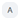

Account menu
The following table outlines the Account

submenu.Submenu | Setting | Description |
|---|---|---|
Settings | Keep room user logged in | The effect of this toggle depends on the role of is the user currently logged in. The setting of this toggle persists until the cache is cleared. |
Show unused objects | Toggle on to display unused objects during the current session. | |
Dark mode | Toggle on to enable dark mode. Dark mode will persist for all users until it is toggled off or the browser’s cache is cleared. | |
Maximum multistate values | Allows you to enter a number of multistate value objects. | |
Account | | Select to save your changes. |
User name and user role | Displays the current User name and User role and cannot be edited. | |
Language | Select the user interface language. | |
Date format | Select the format for dates. For example, DD.MM.YY or MM/DD/YYY. | |
Time format | Select the 24h or 12h time format. | |
Change password |
| |
Log out |
| Logs out the currently logged in user. |